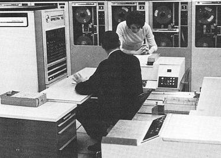

Computer Companies and Digital Evolution

With the massive evolution computers have undergone in the 20th century, it was time for them to be used commercially and assist companies in their business. The first large scale computer to ever use integrated circuits was the RCA Spectra 70, an IBM competitor in the late 1960s.
